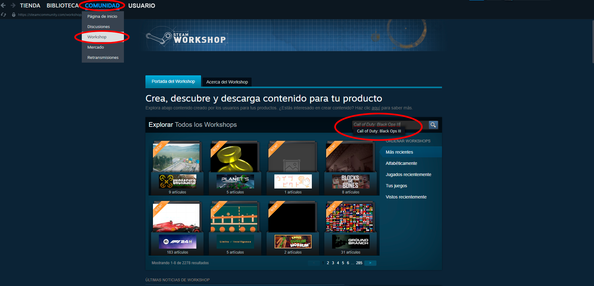
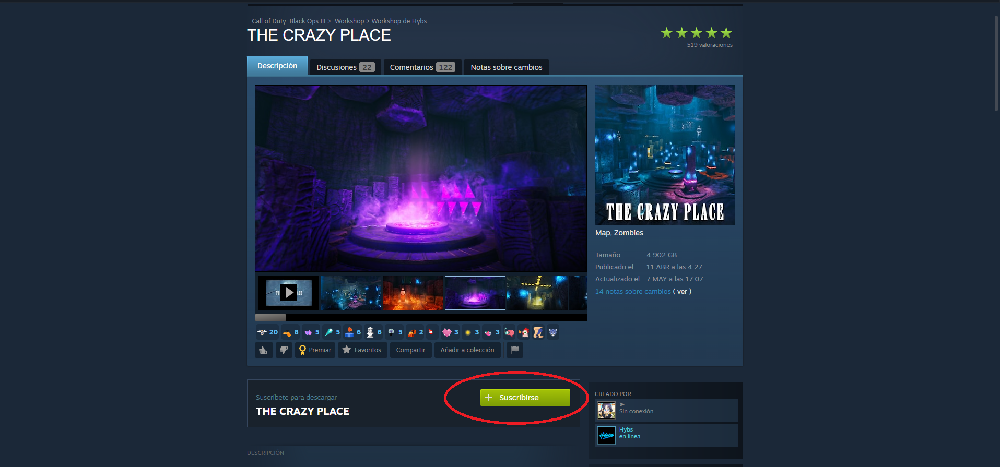
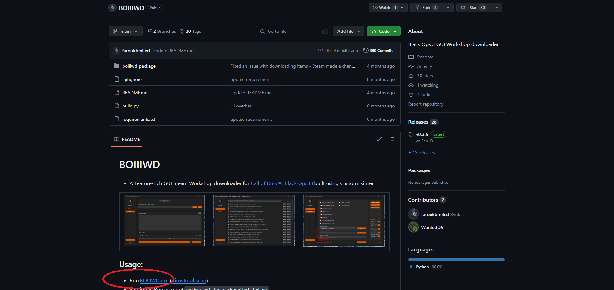
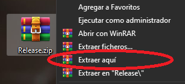
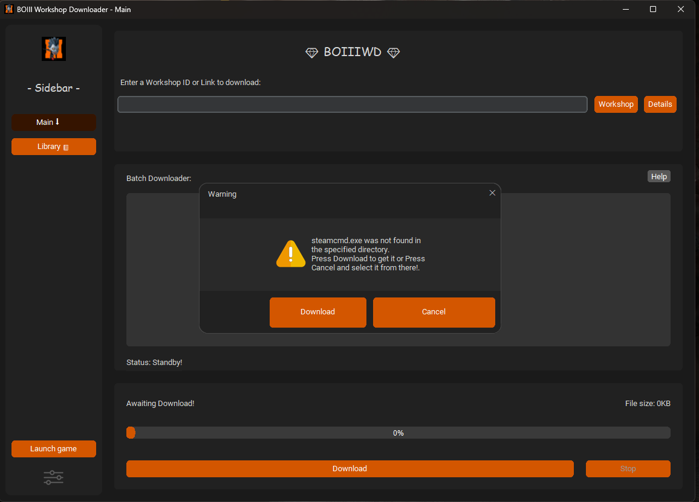
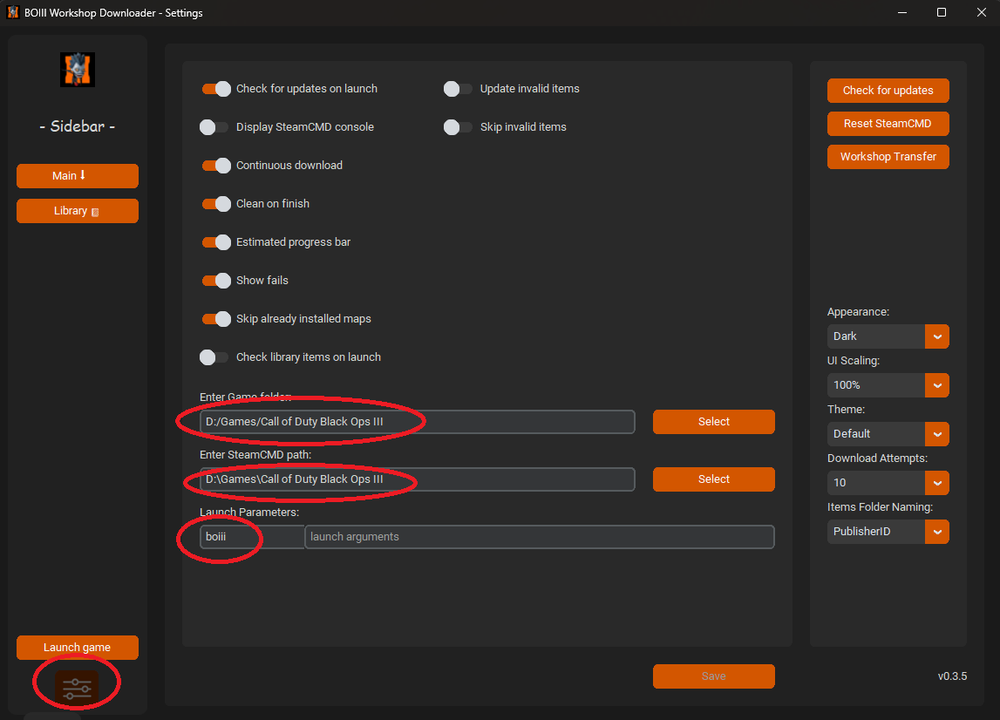
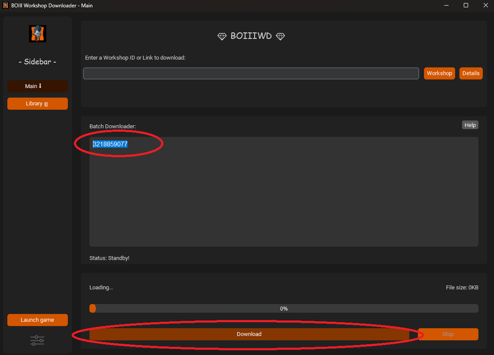
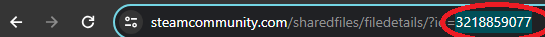

Aquí aprenderemos a descargar e instalar mapas y mods de la Workshop de Steam.
Con el juego comprado en la biblioteca de Steam
Si tenemos el juego legítimo en la cuenta de Steam, solo deberemos de entrar en la sección de Comunidad, meternos en la Worskshop y escribir Black Ops III.

Buscaremos el mapa o mod que queremos tener y le damos al botón verde de suscribirse.
De esta manera empezará a descargarse y la próxima vez que entremos al juego lo tendremos instalado.

Con el juego desde launchers como BOIII.exe o T6:
Nos descargaremos un programa desde el github de Faroukbmiled.
Para ello pincharemos en el enlace de "BOIIIWD.exe".

Ubicado el archivo, le daremos click derecho y extraer aquí.( Si esta opción no aparece, tenemos que descargar e instalar Winrar.)

Hecho esto, el archivo BOIIIWD.exe se habrá extraído, pudiendo eliminar el archivo ".zip".
Al entrar os aparecerá este mensaje y le daremos a Download.

En el icono de abajo a la izquierda "Settings", tendremos que poner la ruta donde tengamos nuestro juego.
Recomiendo dejar las cosas como en la imagen.

De esta manera, solo tenemos que pegar el ID de un mapa o un mod en este apartado y darle al botón de download.

El ID se consigue en la url del mapa o mod. Ej:
